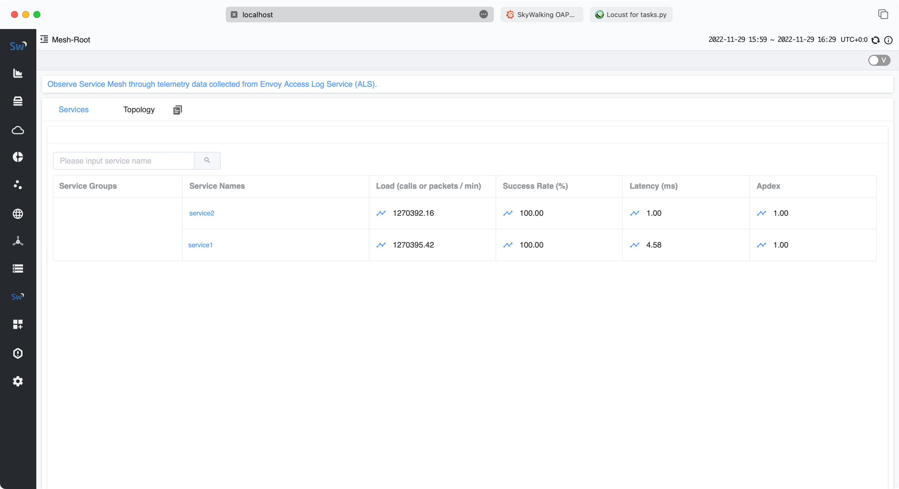
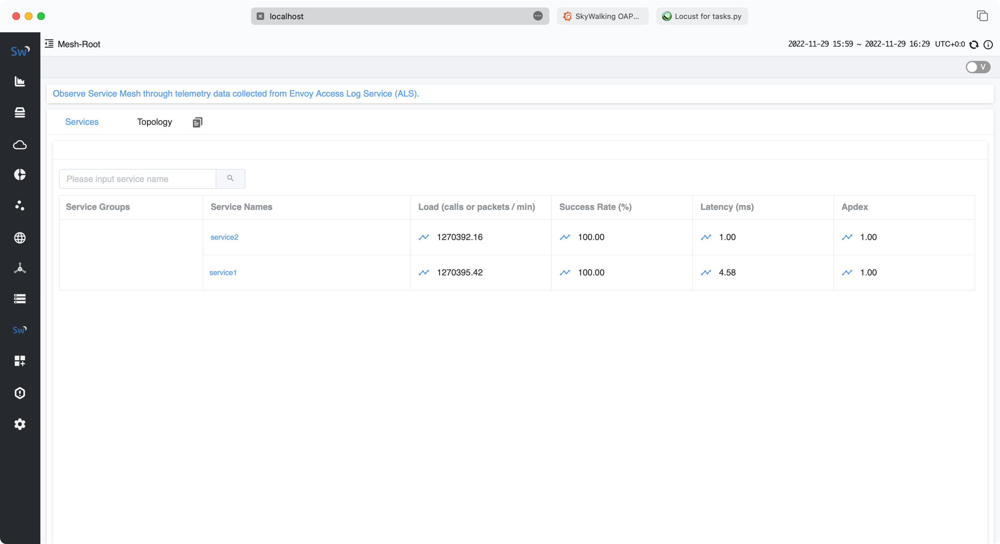

如何在 AWS EKS 和 RDS/Aurora 上运行 Apache SkyWalking
介绍
Apache SkyWalking 是一个开源的 APM 工具，用于监控分布式系统和排除故障，特别是为微服务、云原生和基于容器（Docker、Kubernetes、Mesos）的架构而设计。它提供分布式跟踪、服务网格可观测性、指标聚合和可视化以及警报。
在本文中，我将介绍如何在 AWS EKS 和 RDS/Aurora 上快速设置 Apache SkyWalking，以及几个示例服务，监控服务以观察 SkyWalking 本身。
先决条件
我们可以使用 AWS Web 控制台或 CLI 来创建本教程所需的所有资源，但是当出现问题时，它可能过于繁琐且难以调试。因此，在本文中，我将使用 Terraform 创建所有 AWS 资源、部署 SkyWalking、示例服务和负载生成器服务 (Locust)。
架构
演示架构如下：
graph LR
subgraph AWS
subgraph EKS
subgraph istio-system namespace
direction TB
OAP[[SkyWalking OAP]]
UI[[SkyWalking UI]]
Istio[[istiod]]
end
subgraph sample namespace
Service0[[Service0]]
Service1[[Service1]]
ServiceN[[Service ...]]
end
subgraph locust namespace
LocustMaster[[Locust Master]]
LocustWorkers0[[Locust Worker 0]]
LocustWorkers1[[Locust Worker 1]]
LocustWorkersN[[Locust Worker ...]]
end
end
RDS[[RDS/Aurora]]
end
OAP --> RDS
Service0 -. telemetry data -.-> OAP
Service1 -. telemetry data -.-> OAP
ServiceN -. telemetry data -.-> OAP
UI --query--> OAP
LocustWorkers0 -- traffic --> Service0
LocustWorkers1 -- traffic --> Service0
LocustWorkersN -- traffic --> Service0
Service0 --> Service1 --> ServiceN
LocustMaster --> LocustWorkers0
LocustMaster --> LocustWorkers1
LocustMaster --> LocustWorkersN
User --> LocustMaster
如架构图所示，我们需要创建以下 AWS 资源：
- EKS 集群
- RDS 实例或 Aurora 集群
听起来很简单，但背后有很多东西，比如 VPC、子网、安全组等。你必须正确配置它们以确保 EKS 集群可以连接到 RDS 实例 / Aurora 集群，否则 SkyWalking 不会不工作。幸运的是，Terraform 可以帮助我们自动创建和销毁所有这些资源。
我创建了一个 Terraform 模块来创建本教程所需的所有 AWS 资源，您可以在 GitHub 存储库中找到它。
创建 AWS 资源
首先，我们需要将 GitHub 存储库克隆 cd 到文件夹中：
git clone https://github.com/kezhenxu94/oap-load-test.git
然后，我们需要创建一个文件 terraform.tfvars 来指定 AWS 区域和其他变量：
cat > terraform.tfvars <<EOF
aws_access_key = ""
aws_secret_key = ""
cluster_name = "skywalking-on-aws"
region = "ap-east-1"
db_type = "rds-postgresql"
EOF
如果您已经配置了 AWS CLI，则可以跳过 aws_access_key 和 aws_secret_key 变量。要使用 RDS postgresql 安装 SkyWalking，请将 db_type 设置为 rds-postgresql，要使用 Aurora postgresql 安装 SkyWalking，请将 db_type 设置为 aurora-postgresql。
您可以配置许多其他变量，例如标签、示例服务计数、副本等，您可以在 variables.tf 中找到它们。
然后，我们可以运行以下命令来初始化 Terraform 模块并下载所需的提供程序，然后创建所有 AWS 资源：
terraform init
terraform apply -var-file=terraform.tfvars
键入 yes 以确认所有 AWS 资源的创建，或将标志 -auto-approve 添加到 terraform apply 以跳过确认：
terraform apply -var-file=terraform.tfvars -auto-approve
现在你需要做的就是等待所有 AWS 资源的创建完成，这可能需要几分钟的时间。您可以在 AWS Web 控制台查看创建进度，也可以查看 EKS 集群内部服务的部署进度。
产生流量
除了创建必要的 AWS 资源外，Terraform 模块还将 SkyWalking、示例服务和 Locust 负载生成器服务部署到 EKS 集群。
您可以访问 Locust Web UI 以生成到示例服务的流量：
open http://$(kubectl get svc -n locust -l app=locust-master -o jsonpath='{.items[0].status.loadBalancer.ingress[0].hostname}'):8089
该命令将浏览器打开到 Locust web UI，您可以配置用户数量和孵化率以生成流量。
观察 SkyWalking
您可以访问 SkyWalking Web UI 来观察示例服务。
首先需要将 SkyWalking UI 端口转发到本地：
kubectl -n istio-system port-forward $(kubectl -n istio-system get pod -l app=skywalking -l component=ui -o name) 8080:8080
然后在浏览器中打开 http://localhost:8080 访问 SkyWalking web UI。
观察 RDS/Aurora
您也可以访问 RDS/Aurora web 控制台，观察 RDS/Aurora 实例 / Aurora 集群的性能。
试验结果
测试 1：使用 EKS 和 RDS PostgreSQL 的 SkyWalking
服务流量


RDS 性能


SkyWalking 性能


测试 2：使用 EKS 和 Aurora PostgreSQL 的 SkyWalking
服务流量
 

RDS 性能


SkyWalking 性能


清理
完成演示后，您可以运行以下命令销毁所有 AWS 资源：
terraform destroy -var-file=terraform.tfvars -auto-approve